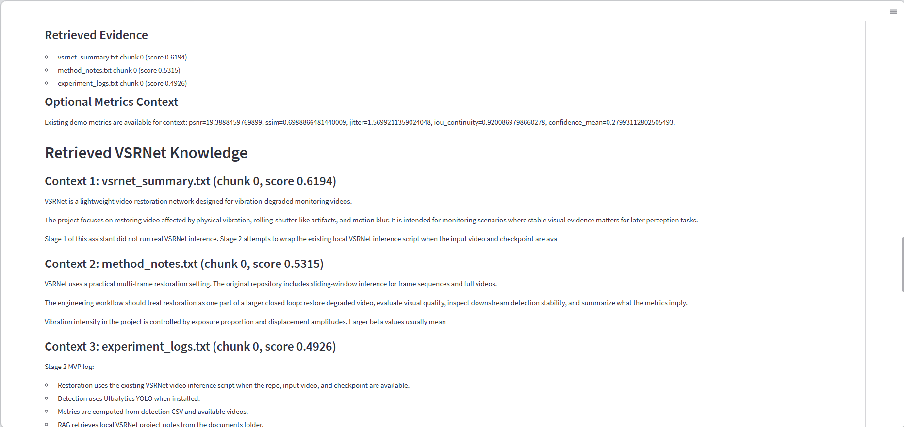

Project 1
VSRNet-Agent
AI 视频分析与自动报告生成产品原型。

Portfolio Overview
AI 视频分析与自动报告生成产品原型。
家庭健康记录与关心同步小程序 MVP。

VSRNet-Agent Product Workflow

VSRNet-Agent Demo Screenshots


VSRNet-Agent Metrics & Report


报告基于流程状态、检索证据和指标上下文生成。
FamilyCare MVP Screenshots


FamilyCare Product Design & Interaction